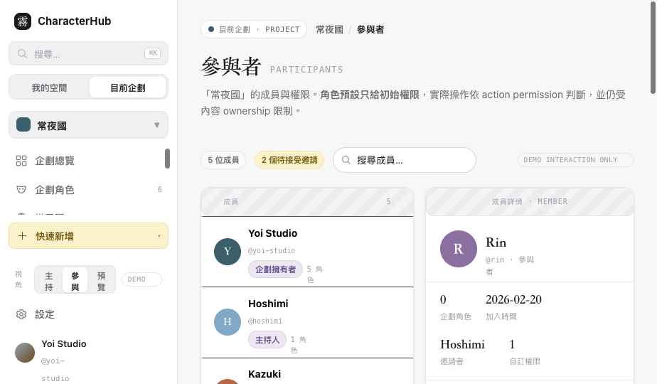

CharacterHub · Slice 5B · 參與者與權限
Slice 5B 驗收
參與者管理：成員與邀請、角色預設、action permission（含個別 allow/deny override）、object-level ownership 限制、邀請流程、移除與擁有權移交、公開頁協作權限。權限判斷一律走 action permission，不把角色名稱寫死在頁面。
participants.html
Membership / Invitation / Override
8 權限群組 · 36 動作
Demo interaction only
01
可點擊頁面
Clickable
用側欄左下「視角」切換 主持／參與／預覽，即時改變可用操作與權限面板。選不同成員看其角色預設、自訂權限與 ownership 邊界。

02
資料邊界
Membership · Invitation · Override
| 概念 | 說明 |
|---|
| ProjectMembership | id / projectId / userId / rolePreset / status / joinedAt / invitedBy。Visitor 不是 Membership，不出現在成員名單（公開預覽進此頁＝Forbidden）。 |
| ProjectInvitation | pending / accepted / declined / expired / revoked。接受前不建立 active Membership。撤銷後連結即失效（外洩防護）。 |
| Permission Override | per-membership 的 allow / deny，疊加在角色預設之上。可：用預設、個別允許、個別禁止、恢復預設。 |
03
角色預設 → Action Permission
Presets resolve to actions
角色預設只給初始權限，畫面實際依 action permission 顯示操作。權限面板分 8 群組（企劃內容／角色與世界觀／故事與圖片／申請與投稿／公開頁／版型與發布／成員管理／危險操作），每項標來源：預設 額外允許 明確禁止 擁有者固定。
| 角色預設 | 能力範圍 |
|---|
| 企劃擁有者 | 全部權限；可移交企劃、封存企劃（擁有者固定）；不可被一般主持人移除。 |
| 主持人 | 管理內容、申請／投稿、公開頁、依政策管理成員；不可移交擁有權。 |
| 共同主持 | 協助內容與審核、編輯公開頁草稿；邀請／移除由政策決定。 |
| 參與者 | 查看內容、管理自己的 ProjectCharacterLink／投稿／頁面 Override；不可改模板本體或他人資料。 |
04
Object-level Ownership
Permission ≠ ownership
action permission 通過後，仍檢查資料 ownership。成員詳情明示「此權限仍受內容 ownership 限制」。UI 不只用模糊的 Owner，分清四種：
| 擁有權 | 主持人不能做的事 |
|---|
| 企劃擁有者 / 角色擁有者 | 主持人可管理 ProjectCharacterLink，但不可修改他人的角色本體（名稱／外觀／圖文設定）。 |
| 素材擁有者 | 可管理企劃圖庫關聯，但不可永久刪除他人擁有的 Asset。 |
| 頁面擁有者 | pageOverride:update_own 只允許改自己的公開頁 Override。 |
| 私人資料 | Host 看得到 submitted 申請，但看不到申請者私人筆記／未分享靈感。 |
05
流程
Invite · Remove · Transfer
| 流程 | 展示 |
|---|
| 邀請 | 輸入 Email/Handle → 選角色預設 → 預覽可取得權限 → 寄出。偵測：已是成員／已有待接受邀請（改重寄）。重寄、撤銷（連結失效）、過期重新邀請。 |
| 移除成員 | 先列影響（ProjectCharacterLink／投稿／頁面 Override／AssetLink／未完成申請），提供：保留並標示原作者／封存其內容／轉交管理權／取消。不靜默刪除角色或原始 Asset。 |
| 移交擁有權 | 僅擁有者可執行；接收者須為 active member；不可逆警告 + 輸入企劃名重新驗證；成功後舊擁有者降為主持人。 |
| 離開企劃 | 唯一擁有者不可直接離開，需先移交或封存。 |
06
公開頁協作權限
Separate page perms
Draft Preview／Publish／Rollback／Slug／Visibility 是不同權限，未合成單一「管理公開頁」。成員詳情逐項顯示「可／否」：
- Host 設計版型：有 pageTemplate:update。
- Member 編輯自己頁面：有 publicPage:update + pageOverride:update_own，但不能改鎖定 Block 或模板本體。
- Publisher 發布：須有 publicPage:publish——能編輯 Draft 不代表能發布。
07
狀態（已涵蓋）
States
無參與者（星海）· Active Member · Pending／Expired／Revoked 邀請 · 自訂權限（Rin 有 allow override）· 權限被降低（Kazuki 有 deny override）· 沒權限查看（公開預覽＝Forbidden）· 唯一擁有者不可離開 · 移除影響預覽 · 擁有權移交 · 已是成員／已有邀請偵測。儲存失敗、跨分頁被移除為 Demo 提示。
08
Responsive / A11y
RWD · A11y
桌機三欄（清單＋詳情＋權限）；≤1100px 權限面板移到整列下方；≤760px 單欄堆疊。權限群組為 <details> accordion 有清楚標題；開關為 role="switch" + aria-checked + aria-label；Modal 有 focus、Esc 關閉；角色／狀態用文字 badge + 圖示（不只靠顏色）。危險操作獨立紅框區。
09
Contract / API Status
Status
DOMAIN CONTRACT PARTIAL · Membership / Invitation / Permission Override
本地已有 project_members 與基礎 permission guard 概念，但完整 Membership、Invitation、Permission Override 與前端管理流程尚未完成。角色預設→action 映射、override 疊加邏輯已在 OCData 定義作為前端 UI 依據。
API STATUS · NOT IMPLEMENTED / PARTIAL SKELETON
正式成員 API、邀請、權限覆寫、Ownership Transfer 與 Auth Session 皆未實作。本頁所有寫入皆為 Demo。
10
Demo-only / 尚未完成
Demo · Open issues
demo邀請、重寄、撤銷、變更角色、調整／儲存／恢復權限
demo移除成員（含影響選項）、移交擁有權、離開企劃
- 真人測試未做：權限編輯的可理解性、邀請流程步驟數需真人任務驗證。
- 儲存失敗／跨分頁被移除目前只以 Demo Toast 表示，未做樂觀更新與衝突回復。
- 政策設定（cohost 能否邀請／移除由企劃政策決定）尚未做成可調 UI。
- 角色預設變更後保留個別 override 的合併視覺尚為簡化版。
11
安全與契約交接註記
Security · Contract handoff
以下為交接給本地端正式實作的規則（本輪不另開 Slice，僅記錄為契約）：
1 · Permission Resolution（統一順序）
Membership active → Project capability enabled → Owner fixed permissions → Explicit deny → Explicit allow → Role preset → Resource ownership/scope → 最終結果。規則：非 active 一律拒絕；deny 優先於 allow/preset；擁有者核心權限不可被 override 移除；模組未啟用時有權限也不顯示操作；action 通過後仍檢查 object ownership。
2 · Grant Ceiling（防權限升級）
改他人權限時不可授予超過自己委派範圍：Host 不可授予 project:transfer_ownership；Cohost 不可自升 Host/Owner；Member 不可改自己的角色或權限；個別 allow 不可繞過 Owner-only 危險操作。「能執行某動作」與「能把該動作授予他人」是兩種不同權限。
3 · Membership Lifecycle
status：active / suspended / left / removed。Invitation 的 pending/expired/revoked 不放進 Membership。left/removed 歷史保留不硬刪，確保作者資訊、投稿、ProjectCharacterLink 與 Audit 可追溯。
4 · Invitation Security
單次使用 token + token hash + expiresAt；revoke 後立即失效；接受時確認登入帳號符合受邀 Email/Handle；open invite 必須是另一種明確政策，不與私人邀請混用。
5 · Ownership Transfer（原子）
確認接收者為 active member ＋更新 Project owner ＋更新雙方 Membership preset ＋處理 Permission Override ＋寫入 Audit Event。任一步失敗整體回復。
CONTRACT GAP · ProjectAuditEvent（本輪不做 UI）
至少追蹤：Invitation create/resend/revoke/accept、Role 與 Permission Override 修改、Suspend/Remove Member、Ownership Transfer、Public Page 權限重大變更。